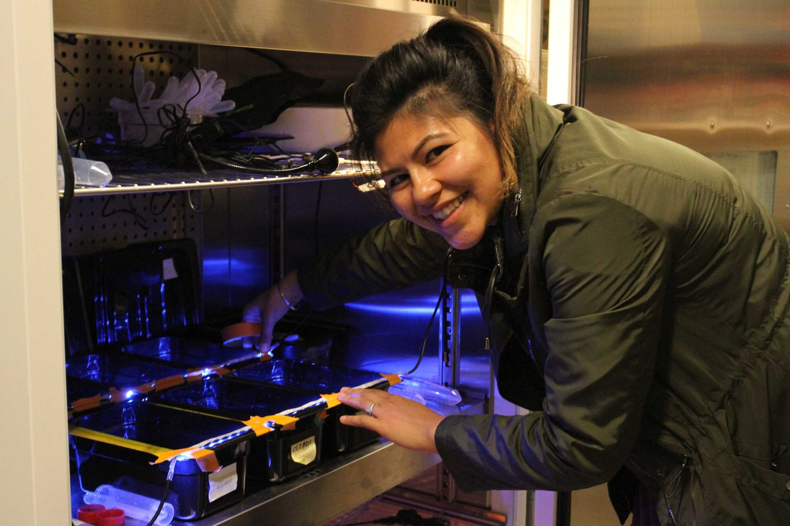
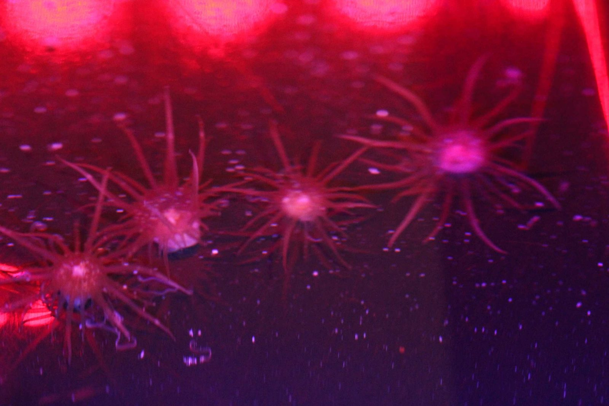

Sea anemones are animals that are very much like corals, except they don’t make stony skeletons and they can move. They are also similar to coral polyps because they host algae, which produce food for the host when the algae are exposed to light.
Shawna Foo, a postdoc at Carnegie Institution for Science’s Dept of Global Ecology when she did this work, investigated movement of sea anemones and how it was affected by the presence of algal symbionts — and what she found was quite amazing!!
When sea anemones host algae, the algae enter the cells of the anemone. The anemone provides the algae with nutrients, and after capturing energy from sunlight, the algae provide the anemone with food. Sea anemones can survive without the food they get from their algal guests. They can wave their arms around and capture food that might be suspended in their vicinity.
Shawna found that when the sea anemones hosted algae, the sea anemones moved towards the light, but when they did not host algae they did not move towards the light.
I normally eschew anthropomorphic thinking, but in this case I want to have a little fun. We can assume that there are mechanistic pathways that explain this finding, but these observations lend themselves to thinking about explanations in terms of intentions, control, and goals.
Perhaps it is the algae that is sensing the light, and then the algae takes control of the anemone and commands the animal to move towards the light, so that it can photosynthesize more rapidly. If this is the case, it is really surprising that a plant-like photosynthetic algae can control an animal.
On the other hand, perhaps it is the anemone that is sensing the light, and the anemone is controlling the algae and moving it towards the light so that the animal can get more food.
In either case, evolution created a symbiotic pairing that moves towards the light so that both the anemone and its algal symbiont can prosper.
Mechanisms still need to be worked out, and anthropomorphic language is rarely justified in science, but nevertheless it is possible that a photosynthetic plant-like algae is controlling the motion of an animal and causing the animal to move towards the light. Seems amazing to me.
This work was published in the journal Coral Reefs, and is available under open access.
Foo, S.A., Liddell, L., Grossman, A. et al. (2019). Photo-movement in the sea anemone Aiptasia influenced by light quality and symbiotic association. Coral Reefs.
